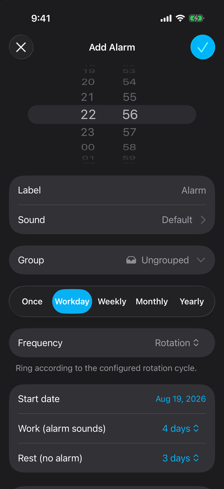
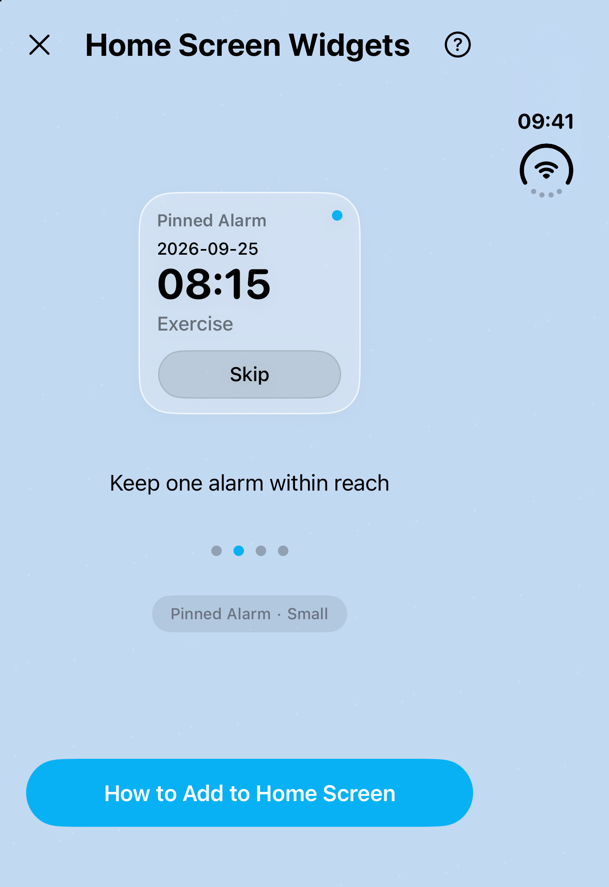

If you work nights this week and days next week, an alarm left over from the last shift can be easy to miss. Even a correctly timed alarm needs the right dates. This guide covers a free manual setup in Clock, an automatic work/rest cycle in Alarm One, and dated alarms for rosters that mix different shift lengths or wake-up times.
Why weekday alarms drift away from your rota
The built-in Clock app repeats alarms on selected days of the week, as described in Apple's alarm guide. That works for a fixed Monday-to-Friday schedule. A 4-on-4-off rota takes eight days to complete, so its next work block starts one weekday later.
For example, a block beginning Monday, October 12, 2026 covers October 12–15. Your four rest days are October 16–19. The next block begins Tuesday, October 20. A Monday-to-Thursday repeat would ring on your last rest day and miss your Friday shift.
| Roster | Alarm setup | What you enter |
|---|---|---|
| Same working weekdays | Clock weekday repeat | Weekdays and wake-up time |
| 4-on-4-off or 2-on-2-off, one wake-up time | Alarm One Rotation | First work date, work days, rest days |
| Panama / 2-2-3, DuPont, or changing day/night shifts | Alarm One Once alarms | Each shift's wake-up date and time |
Method 1: manage shift alarms in Clock
You can use the built-in Clock app for any roster if you check and enable the correct alarm before every shift.
Write down the next work block
Use calendar dates from your roster. Include the wake-up time for each shift and mark the rest days.
Create a labeled alarm for each wake-up time
Open Clock → Alarms and tap +. Set a time, sound, and label such as “Day shift — leave by 06:15” or “Night shift — 17:30.” Save the alarm.
Leave Repeat set to Never
Enable the appropriate alarm before you sleep. A non-repeating Clock alarm targets the next occurrence of that time; check whether it is AM or PM. Re-enable it before the next workday.
Make a nightly roster check
Confirm tomorrow's shift, the enabled alarm, and its sound. Keep the other shift alarm switched off on rest days.
This method is free. Its daily maintenance is the tradeoff: an alarm label helps you choose the right entry, but you still have to turn it on.
Method 2: set a 4-on-4-off cycle in Alarm One
Use Rotation when you have consecutive work days followed by consecutive rest days and the same wake-up time throughout the work block. Alarm One stores the start date and both day counts.
Create your shift alarm
Tap + in Alarm One. Set your wake-up time, such as 05:30, and add a clear Label. Leave enough time to get ready and travel.
Choose Workday → Frequency → Rotation
The Workday tab contains the Rotation rule. Selecting it reveals the start date and work/rest controls.
Set the first work date
For this example, set Start date to October 12, 2026. This date is day one of the work block, even if you create the alarm several days earlier.
Set Work to 4 days and Rest to 4 days
Work defines consecutive days that ring. Rest defines consecutive days that stay silent. Together they make an eight-day cycle. For 2-on-2-off, use 2 and 2.
Save and check the next two blocks
Tap the checkmark to save and allow alarm access when prompted. Compare the Calendar view and upcoming alarms with your roster, including the first rest day and the next block's start.

| Dates | Rota | Alarm |
|---|---|---|
| October 12–15 | Four work days | 05:30 each day |
| October 16–19 | Four rest days | No occurrence |
| October 20–23 | Next work block | 05:30 each day |
| October 24–27 | Next rest block | No occurrence |
Keep the rule while this pattern and wake-up time stay the same. When your underlying rota changes, update the rule and check the dates again.
Night shifts, Panama, and DuPont rosters
A night shift needs an alarm on the date you wake up to start it. If you begin work at 19:00 on October 12 and finish the following morning, a 17:30 wake-up belongs to October 12. A repeating 4-on-4-off night rota can use Rotation with that afternoon time.
If your cycle alternates day and night blocks, map both wake-up times and their dates. One Rotation alarm has one time and one work/rest pair. It cannot describe every transition in a mixed roster.
For Panama, DuPont, or continental schedules with changing blocks, create Once alarms for the specific dates on your published roster. Choose Once in the alarm editor, select the wake-up date and time, label the shift, and save. Repeat for the remaining shifts, then review the Calendar view. When the next roster arrives, enter its dates.
A Panama 2-2-3 pattern has several work and rest blocks; a DuPont roster also changes between days and nights. Entering the total cycle length into a single work/rest pair will not reproduce those schedules. Use your employer's actual roster as the reference.
Groups, skipped shifts, and one-time changes
Keep a shift routine together
Use the Group field in the alarm editor to organize work alarms. “Day shift” and “Night shift” groups make sense when you have several alarms for each routine, such as wake-up and leave-home alarms. Group controls let you enable, disable, or skip the alarms together. Check the next dates after switching routines; the group does not calculate a new rota for you.
Skip a cancelled shift
If tomorrow's shift is cancelled, use Skip on the recurring alarm. It omits the next occurrence and keeps the cycle's start date and work/rest counts. For several days of leave, check each affected date; skipping once covers one occurrence.
Add a dated alarm for overtime or a swap
For an extra shift or a different wake-up time, create a Once alarm at the replacement date and time. Skip the original occurrence if it is no longer needed. You can enable automatic deletion for the Once alarm to keep your list tidy after it rings. See the self-deleting alarm guide for that setting.
Five checks before you sleep
- Read the label and date. “Night shift — leave by 18:15” is easier to verify than “Alarm 1.” Check AM/PM or the 24-hour time.
- Test your sound. Choose a tone you can hear and try your settings while awake. Alarm One offers custom sounds, gradual volume, and snooze; check that your chosen setup suits daytime sleep too.
- Match any backup to the same dates. If you add a second alarm ten minutes later, give it the same rotation start date and day counts. Include it when skipping a cancelled shift.
- Use a widget for a quick check. Alarm One's Home and Lock Screen widgets show alarm information. A pinned alarm widget keeps one alarm's next date, time, and controls within reach.
- Review when the roster changes. Check enabled groups, the next work and rest dates, and pending Once alarms. Confirm that alarm access is enabled before relying on the schedule.

Frequently asked questions
Can the built-in iPhone Clock app repeat a 4-on-4-off alarm?
Clock repeats on selected weekdays. A 4-on-4-off schedule repeats every eight days, so you need to turn Clock alarms on and off manually or use a work/rest rotation in Alarm One.
Can I use one Rotation alarm for Panama or DuPont shifts?
One Rotation alarm uses one wake-up time and repeats consecutive work days followed by consecutive rest days. For Panama, DuPont, or a roster with changing times, use dated Once alarms for the individual shifts.
Does skipping an alarm move the rest of the rotation?
No. Skip omits the next occurrence while keeping the rotation's start date and work/rest counts. For a replacement shift, add a separate Once alarm at the new date and time.
Which iOS version does Alarm One need?
The current App Store version requires iOS 26 or later. Allow alarm access when prompted, save your schedule, and check the upcoming alarm dates against your roster.